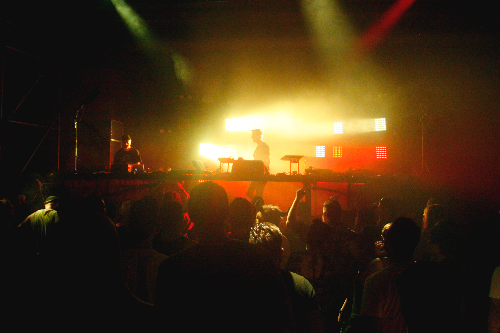

A Movement Memorial Day
There’s a reason we keep coming back to Detroit for Movement, and why the festival has been growing and going strong for 16 years. The festival is held annually over the Memorial Day weekend in the heart of Detroit, Hart Plaza. Known for its roots in Motown and Electronic music, Detroit is far from just musically inclined, it’s musically designed like the automobiles that the city is known for. The festival itself brings out hundreds of thousands of people from all over the world to the Motor City, and a city that often gets a bad rep for its downfall. We’ve said it before, and we’ll say it again, Detroit is not dead. Festivals like this one are very much a part of its long lasting vitality.
This year was bigger and better than ever. Over the course of the weekend there were some amazing sets from Disclosure, Shigeto, Boys Noize featuring Skrillex, Squarepusher, The Saunderson Brothers, Carl Craig, and hip hoppers turned electronic for the weekend, Method Man, Danny Brown and Snoop Dogg. The festival grounds weren’t the only thing worth making the trek out to Detroit for, but the after parties gave a more intimate opportunity to party til the wee hours of the morning.There is no better way to spend your Memorial Day than dancing and basking in the sun surrounded by music, dancing and an eclectic group of people. Miss your hot dogs and burgers? One of the bars down the street has got you covered. The whole downtown makes way for Movement and it turns into one huge party.
Here are some of the many reasons we keep coming back to Movement:
5. Chillspace and Art

4. Underground Dance Parties

If you aren’t too afraid to venture to the Underground Stage, you will find the closest thing to an all day rave. Dark, seedy, sweaty, and smoky, this underground party isn’t for the light festival goer. You might feel like you need more drugs, or the music might make you feel like you are already. Nina Kraviz and Snoopadelic were some of the lighter music sets, but if you’re looking for some deep bass techno, trance, furries and a little darkness, head underground.3. Cool Parents & Free People

2. Dope DJs

1. Detroit: The City Itself

There’s a certain beauty to the city, whether it be the musical roots, the art and graffiti that’s strewn across the walls, the pianos placed in random places downtown, the makeshift art gardens, the lake, the buildings, and even the abandon of the burned houses and structures. There are so many people there who believe in Detroit and want to see it thrive. Forget whatever you heard about Detroit, your preconceived notions, your jokes, your ignorance. Go there. Detroit could be any of us. Beautiful, broken, struggling, rising, and strong.
Check out more pictures from Movement over at our Facebook!
photo credits: ciera mckissick